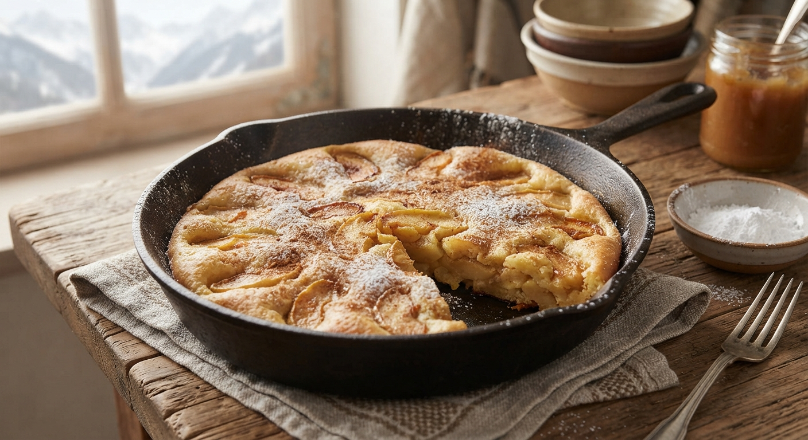

Matafan
Home

An apple Matafan (or Matefaim) is a traditional, rustic French thick pancake from "Les Alpes" region, loaded with caramelized apple slices.
Made from a simple batter of flour, eggs, sugar, and milk, it is slowly cooked in a buttered skillet until golden and fluffy,
then flipped to form a comforting, cake-like dessert. Its name literally translates to "hunger-killer".
Ingredients
- 4 pommes
- 125gr de farine
- 70gr de sucre
- 15 gr d'eau de vie
- 15 gr de beurre
- 2 oeufs
- 10gr d'eau tiède
- 1 sachet de levure
- 1 sachet de sucre vanillé
- 15gr de cannelle
- 0.5gr de sel
Steps
- Peel and slice the apples.
- In a mixing bowl, combine the flour, sugars, baking powder, and a pinch of salt.
Add the eggs, then the brandy (eau-de-vie) and lukewarm water. Whisk well until smooth.
- Butter a large skillet, including the sides. Sauté the apple slices until they are beautifully golden brown.
- Pour in the batter to completely cover the apples. Cook this "omelet" until the bottom is golden brown.
- Flip the Matafan onto a serving plate and dust with cinnamon.
- To be enjoyed hot, warm, or chilled.